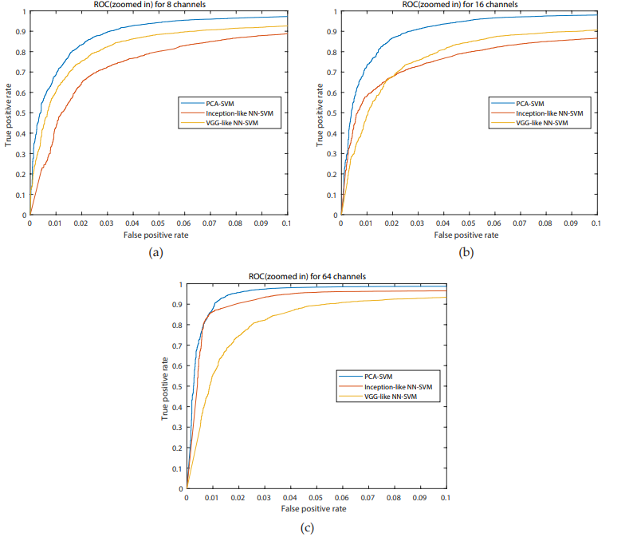

The Biometric Security Challenge
As the risk of unauthorized personal data exposure grows, biometric authentication offers a highly secure
alternative to traditional passwords. Biometric authentication using electroencephalography (EEG)
signals relies on the subject-specific nature of brain responses, making them exceedingly difficult to
artificially recreate.
To evaluate this potential, we utilized a dataset comprising EEG responses to a simple motor paradigm
(clenching and relaxing the left and right hand) recorded from 105 subjects. We designed a
novel 2-stage authentication system specifically optimized for single-trial verification.
Stage 1: Signal Complexity & Feature Extraction
To extract meaningful biometric signatures from the raw EEG data, we deployed an advanced signal
processing pipeline in MATLAB.
- Empirical Mode Decomposition (EMD): We utilized EMD to isolate frequency bands in a
data-driven way, extracting the Intrinsic Mode Functions (IMFs) that contained the highest
information density.
- Entropy & Power Metrics: For each isolated IMF and across multiple channel
configurations (8, 16, and 64 channels), we computed specific signal complexities, including
univariate Shannon entropy, log entropy, sample entropy, and approximate entropy.
- Spectral Features: We supplemented the complexity metrics by calculating the
average power of the mu (7.5–12.5 Hz) and beta (16–31 Hz) rhythms using the multi-taper method.
Stage 2: Dimensionality Reduction & Deep Learning
To process the resulting feature matrices, we implemented and rigorously compared three distinct
dimensionality reduction methodologies prior to final classification.
- Deep Convolutional Neural Networks (CNNs): We engineered two architectures in
Python/Keras—an Inception-like CNN and a VGG-like CNN—specifically adapted to unveil dependencies
within EEG features. These models utilized 1D convolutions to balance network width and
depth while preventing vanishing gradients.
- Principal Component Analysis (PCA): We benchmarked the deep learning models against
PCA, which isolated the eigenvectors capturing the largest data variance.

Figure 7. Receiver Operating Characteristic (ROC) curves. Authentication performance comparing the PCA-SVM, Inception-like NN-SVM, and VGG-like NN-SVM decoders across the 64-channel configuration. The graph visualizes the highly favorable trade-off between the True Positive Rate and False Positive Rate, highlighting the PCA-SVM model's efficiency for real-world deployment.
Classification Performance & Real-World Viability
The reduced feature matrices from the CNNs or PCA were fed into a Support Vector Machine (SVM) equipped
with a radial basis function (RBF) kernel to execute the final binary classification (authenticating the
valid user versus imposters).
The system was evaluated based on its Accuracy and False Acceptance Rate (FAR). The results demonstrated
high viability for real-world deployment:
- Optimal Performance: The PCA-SVM decoder utilizing 64 channels achieved an
outstanding overall accuracy of 95.64% alongside a remarkably low FAR of 1.26%.
- Architectural Trade-offs: We developed both an Inception-like and a VGG-like NN-SVM. While both the Inception-like and VGG-like NN-SVM
decoders achieved strong accuracies (up to 93.40% and 90.68% respectively on 64 channels), they
required significantly more computational training time (1 to 3 hours vs 30 minutes for PCA-SVM) and did not exceed the PCA-SVM performance. Consequently, the PCA-SVM
architecture was recommended as the faster, more practical solution for real-world authentication
systems.